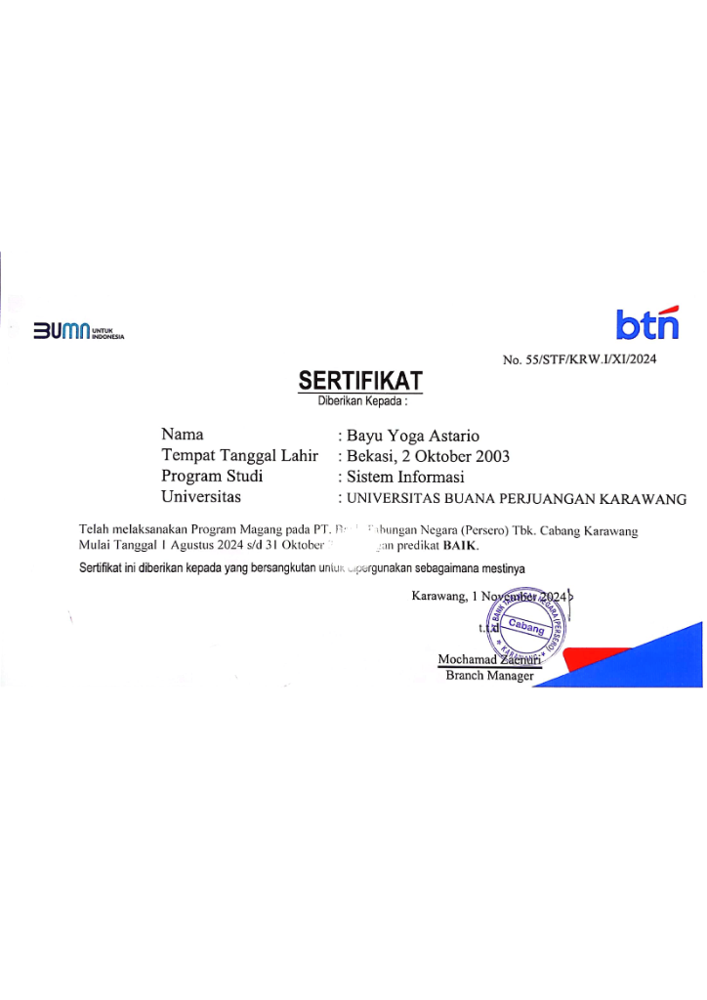

Internship
Agustus 2024 - Oktober 2024
PT Bank Tabungan Negara (Persero) Tbk
Funding Intern
Mengolah dan mengorganisir data operasional menggunakan Microsoft Excel untuk pelaporan dan monitoring. Menggunakan Python untuk membantu pengolahan data dan meningkatkan efisiensi kerja. Mendukung kegiatan operasional dengan dataset terstruktur dan laporan.
Microsoft Excel
Python
Data Processing
Reporting